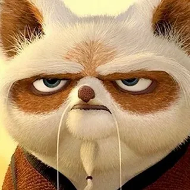

По (настоящее имя — Лотос) — главный герой цикла произведений о «Кунг-фу Панде». kung-fu-panda.fandom.com
По — большая панда, приёмный сын Господина Пинга, один из учеников мастера Шифу в Нефритовом Дворце. Также он предсказанный в легендах Воин Дракона. kung-fu-panda.fandom.com
По — энергичный, немного глуповатый и невезучий толстяк, обожает «Неистовую Пятёрку» и кунг-фу. В конце истории, после победы над Тай Лунгом, По становится настоящим Воином Дракона и, фактически, членом «Неистовой Пятёрки». ru.wikifur.com
По — персонаж мультфильмов «Кунг-фу Панда», «Кунг-фу Панда 2», «Кунг-фу Панда 3» и других произведений. ru.wikifur.comen.wikipedia.org
По — это предсказанный Воин Дракона или Повелитель Дракона, а также Воин Чёрного и Белого. Он приёмный сын мистера Пинга ( китайского гуся) и один из учеников мастера Шифу. По также является лидером команды Яростная пятёрка, хотя формально он не входит в её состав, так как считается вторым мастером после Шифу. В «Кунг-фу Панда: Легенды крутости» выясняется, что По может с первого взгляда освоить кунг-фу. [2]
Главный интерес По (которого в фильмах играет Джек Блэк) — кунг-фу. Он досконально изучил предания о воинах, знаменитые боевые приёмы, даты и исторические артефакты. Его глубокое понимание боевых искусств распространяется и на их философские аспекты, что иногда позволяет ему делать открытия, недоступные даже таким уважаемым мастерам, как Шифу. Он был популярен среди всех своих друзей, и они все любили его в детстве. Он отлично готовит, но у него ужасные манеры за столом.
Хотя настоящей страстью По было кунг-фу, он не хотел признаваться в этом отцу, боясь его разочаровать. Несмотря на мягкий и дружелюбный характер, По испытывал сильное отвращение к себе, считая себя неудачником из-за своего роста и того, что его вид не славится воинскими традициями. Когда он расстроен, то обычно объедается.
Великий Мастер Угвэй – старая мудрая черепаха, которая когда-то занимала место главного мастера Нефритового дворца. Но так как он уже очень стар, это место занимает его любимейший ученик – мастер Шифу, который во всём советуется с мудрым учителем. Великий Мастер Угвэй считается мудрецом за свои знания и опыт. Угвэй является основателем кунг-фу. Очень мудр и добр.
Описание
Угвэй похож на зелёную черепаху с большим панцирем. Кожа нежно салатового цвета с белым с нижних сторон конечностей и шеи и имеет когти ввиде пальцев. Имеет длинную вытянутую шею и большие зелёные глаза. Всегда держит при себе трость из персикого дерева. Иногда носит жёлтую накидку с символом Инь и Ян на спине.
История
Предположительно родился на галапагосах. Потом уплыв с них, отправился в странствия по всему миру, попав через Индию в Китай. В ходе своих странствий набрёл на Озеро Святых Слёз, где раскрыл силу и гармонию концентрации и создал кунг-фу, как систему физической подготовки через через духовный рост. Но увидев в будущей Долине Мира, что сильные причиняют вред слабым, Угвэй расстроился, и чтобы спасти жителей будущей Долины Мира от тех, кто причиняет вред слабым, Угвэй просидел в пещере 30 лет, чтобы обрести внутрений покой, задавая себе лишь один вопрос: "Кто я?", отрешившись от всего мирского, еды и воды, затем внутренний покой и обретя гармонию со Вселенной. Затем Угвэй придя в Долину Мира, он принёс мир в долину, принеся гармонию и мир, в честь чего жители и назвали долина, а Угвэй посадил персиковое дерево в Долине Мира и создал свиток дракона в надежде, что Воин Дракона станет легендарным защитником и его дальнейшим приемником. Потом Угвэй победил демона Ке-Па, освободив долину мира от него и после освобождения Долины Мира, Угвэй начал обучать искуству кунг-фу разных животных, среди них был Золотой Такин.
Потом 500 лет спустя, Угвэй сражался с огромным войском вместе с Каем, но сам Угвэй был сильно ранен. И Кай взяв раненого брата по оружию на плечи, нёс друга на плечах, ища помощь. Спустя много времени странствий в поисках помощи, Кай нашёл панд и они исцелили Угвэя. Но сам Кай захотел обрести силу Ци, чтобы использовать её в своих интересах, и начал превращать панд в медальоны. Но Угвэй встал на пути бывшего друга, не давая ему своими действиями сделать ещё большего вреда и Кай расценил это как предательсво. И в ходе битвы земля сотрясалась, а Угвэй изгнал своего лучшего друга в Мир Духов, временно защитив мир от него. Затем Угвэй на протяжении следующих 500 лет, обучал много других учеников, которые стали великими кунг-фу мастерами, таких, как Летающий Носорог и его сын Громовержец, Шифу и другие члены Неистовой Пятерки, Чао и Джунджи, Ву Шен и др.
Мастер Шифу - первый по важности персонаж цикла произведений о Кунг-фу Панде. Шифу – ученик мастера Угвэя и учитель многих великих героев Китая, таких как По (Воин Дракона), Неистовая Пятёрка и Тай Лунг.

Ранние годы
Baby Shifu
Широнг оставляет Шифу
В мультсериале Кунг-фу Панда: Удивительные Легенды Шифу рассказывает, что ещё ребенком был оставлен своим отцом Широнгом на пороге Нефритового Дворца. До этого момента с трехлетнего возраста они вдвоем путешествовали по населенным пунктам и продавали фальшивые талисманы, которые, по преданиям, должны были лечить тех, кто их надевал. Однажды, когда Шифу было двенадцать, его отец отвел его к Нефритовому Дворцу, обещая вернуться через пять минут. Ждал же его Шифу до наступления ночи. В конце концов он был найден мастером Угвэем и приглашен внутрь.
Тренировки
Shifu (Furious Five)-1
В составе неистовой пятёрки
В дальнейшем Шифу проходил тренировки под руководством мастера Угвэя и предположительно до вступление в первую Неистовую Пятёрку, Шифу подружился с бородавочником Таотаем, который создал Зал Тренировок и потом в ходе обучения не смог пройти тренировки, так как был не способен обучатся кунг-фу. В результате затаив обиду на Шифу и само кунг-фу, Таотай ушёл, пообещав уничтожить кунг-фу. В дальнейшем Шифу обучался в составе Неистовой пятёрки – вместе с совой Фэнхуан, мастером Петухом, Слоном и Снежной Пантерой. На одной из последних миссий, Неистовая Пятёрка отправилась на поиски меча, который был проклятым и тот, кто его возмьёт в руки станет одержимым демоном, живущим в мече. Узнав это, Шифу викинул меч в жерло вулкана, за что остальные члены Пятёрки затоили на Шифу обиду на долгие годы. Подразумевается, что состав Пятёрки был распущен после предательства Фэнхуан, которая встала на путь зла, бросив вызов Угвэю, но проиграла ему в бою и улетела. Также какое-то время после распада Пятёрки, Шифу обучался вместе с мастерами Чао и Джунджи, после завершения обучения которых Угвей хотел выбрать будущего настоятеля Нефритового Дворца из кандидатов ввиде Чао, Джунджи и Шифу. В конце концов Угвей выбрал Шифу, а Джунджи затаив обиду на Угвея и Шифу, отправился в Шаолинь с Чао, тайно собирая учеников. Также какое-то время спустя Шифу влюбился в воровку Мейлинг, но узнав о её деятельности, разорвал с ней отношения на долгие годы. Также в юности Шифу втайне надеялся стать Воином Дракона, но, узнав, что этого не случится, обещал себе обучить Воина Дракона.
В комиксе "Art of Balance" говорится, что, став старшим мастером, Шифу был ошеломлен большим количеством ответственности свалившейся на него. В результате Шифу потерял внутреннее равновесие (как сам Шифу описал свое состояние - "застрял в переходном периоде") и в какой-то момент даже оказался побит манекеном на верёвке. Его стресс был столь силён, что он даже решил повесить робу мастера на гвоздь и подготовился уйти из кунг-фу, вернувшись к своей старой жизни. Впрочем, его остановил Угвэй и научил технике, основанной на равновесии - "Хинг Кунг". Шифу преуспел в её изучении и познал важный урок: настоящий баланс – не позволять весу мира контролировать тебя, но самому обрести вес, чтобы контролировать мир. Позже Шифу обучает этой дисциплине своего ученика По.